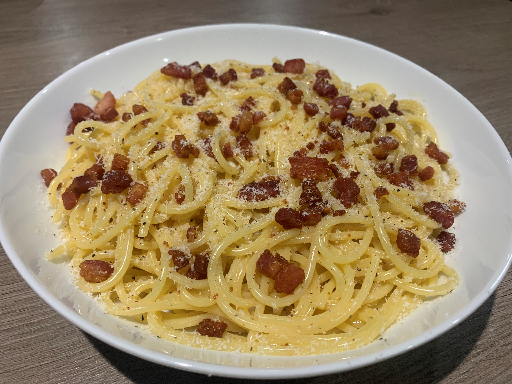

Carbonara is perhaps one of the most famous pasta dishes to come out of Italy. It originated in Rome and variations of the dish can be traced back to the 19th century, but the modern dish came to be in the middle of the 20th century. The traditional ingredients include pasta, eggs, guanciale, and hard cheese. The simplicity of this dish while maintaining a big flavour is why it is so popular all around the world.
Traditionally, carbonara is made using types of pasta which are long and thin, which enables the to cook properly. Some of these types of pasta are; fettuccine, linguine, and spaghetti (with spaghetti being the most popular).
Watch the video below for the perfect example of how to make a Carbonara!
Below, I will detail the ingredients and method for making my take on Tom Kha Gai. I removed the Coconut Milk to give it a thinner, less creamy consistency but this is entirely based on preference. Most ingredients will be available at your local supermarket, however, some may be difficult to find.
As you can see above, this dish is so simple and requires such a small amount of ingredients. The great thing about this dish is about how elevated these ingredients become when used together in this way!
Below is my finished effort a the Carbonara. As you can see it has crisped guanciale for that crunchy texture, as well as a parmesan grating for flavour. There is no need for salt with this recipe as the guanciale is salty enough on its own, but Carbonara traditionally contains a generous amount of black pepper. Hover over the image to enlarge!
Click the button below to keep track of the number of times you have made the dish on this page. The number of times you click the button will be stored for the next time you come back to the site!